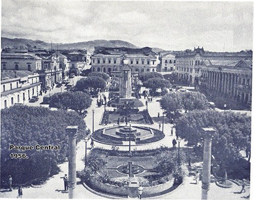

Historia
En la época precolombina el territorio estuvo ocupado por los k`ichés y durante la llegada de los españoles sus tierras fueron escenario de batallas. En ellas murió Tecún Umán en los Llanos de Urbina, al iniciarse la derrota de los k`ichés en febrero de 1524 Quetzaltenango tuvo mucha importancia durante la época independiente y en 1838, junto con los departamentos de Quiché, Retalhuleu, Sololá, Totonicapán, Suchitepéquez y Huehuetenango, formó el antiguo Estado de Los Altos, considerado como el sexto de la Federación Centroamericana El 16 de septiembre de 1845 fue establecido como departamento por decreto de la Asamblea Nacional Constituyente.
Se puede señalar la importancia que tuvo el movimiento reformista de junio de 1871 que originó el auge cafetalero que permitió el crecimiento y desarrollo del departamento.
